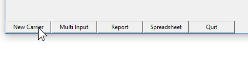

Building Carrier List
A carrier list is a list of carriers that are relevant to your investigation. The carrier list can vary week to week, day to day and will certainly differ from one station to another station. The carriers on the carrier list will either be full time regulars or auxiliary carriers (CCAs). Each carrier on the carrier list will be defined by combination of attributes:
| 1. | Effective Date (Since there can be more than one record for any one carrier, the effective date is the date upon which this carrier’s particular status becomes effective) |
| 2. | Name |
| 3. | List Status (that is if the carrier is on the overtime desired list, work assignment list or no list. Auxiliary or “aux” is also a list status for the purposes of Klusterbox) |
| 4. | NS Day (this is the carrier’s non scheduled day. It can be expressed as a color or a day of the week as Klusterbox, given the service week knows the correct ns day for each ns day color code) |
| 5. | Route (For regular carriers this will be one route expressed as four digits. In the case of carrier technicians, floaters or T6s, it should be expressed as five routes, expressed as four digits each, separated by a backslash. For auxiliary carriers the field should be left blank). |
Using the Automatic Data Entry
If you have the correctly formatted documentation, you can use the Automatic Data Entry to build the Carrier List. For more information on this see How to Use the Automatic Data Entry. This will automate much of the process and should cut down on the time needed considerably.
Entering in New Carriers Manually
If you don’t have the correctly formatted documentation then you can still build the Carrier List manually. Once you have entered a carrier into Klusterbox, they will be added to the database and you will not need to add them again for future investigations.
Entering New Carrier Information
Once you have entered in an Investigation Range (see Getting Started if you don’t know how) a panel of buttons should appear on the bottom of the main screen. The first of these buttons will be the “New Carrier” button. To enter a new carrier to the carrier list, press this button. You will need to do this for each new carrier that you want to add.

You
can also access the New Carrier function via the menubar with the
path Basic > New Carrier.
The effective date is the date on which the carrier and the particular list of attributes given, becomes effective. To set the effective date you will use the option menus to set the month and day. Then you will use the text field to enter the year. This works the same as setting the Investigation Range. Since the effective date is already set to the first day of the Investigation Range, you shouldn’t have to make any changes, but it is important that you set the correct Investigation Range ahead of time – to be clear, this is the date or range of dates that you are investigating.
To set the carrier name you will use the text fields under last name and first initial. It is recommend that you enter only one first initial although you can add a full first name if you like or need to. Since the Klusterbox database uses the carrier name as a unique identifier, you might have to add a full first name so as to differ individuals with the same last name and the same first initial.
Please note that even if you use a mixture of upper case and lower case in when entering in the carrier name, the name will be saved as all lower case and will be displayed as such thereafter.
To set the list status you need to select from a list of four radial buttons. The options are “OTDL” for overtime desired list, “Work Assignment” for work assignment list, “No List” if the carrier is not on a list and “Auxiliary” for auxiliary carriers such as City Carrier Assistants. The default setting is No List.
To set the non scheduled day click on one of the buttons under the “non scheduled day” heading. The buttons show both an abbreviated day of the week which correlates to the carriers ns day color code as well as the color code. Also, when pressed, the button will light up with the color of the ns day color code. The default is “none.”
To set the route/s use the text field to enter in the carrier route. Routes are expressed as 4 digits. The first two digits are the last two digits of the zip code or zone. The last two digits are the route number. If the carrier is an auxiliary carrier, there will be no route. Even though an auxiliary carrier might have opted a route, the “route” attribute does not relate to opted routes. In the case of carrier technicians, floaters and T-6s there is a very specific format for entering in the string of routes. It consist of five 4 digit routes separated by backslashes. For example “0901/0905/0915/0924/1251”. Having the routes in the correct format will help the Automatic Data Entry to identify work done off route automatically. Note that the routes don’t have to be in any numerical order.
To set the station you really don’t have to do anything because the correct station matches the station set in the Investigation Range and is set as the default. If, for some reason, you need to select a different station or “out of station” you can use the option menu.
Pressing “Go Back” will result in cancellation. The screen will close and main screen will appear without the new carrier being added. To apply and add the new carrier to the carrier list, press the “Apply” button on the bottom of the screen once you have entered all the correct information.
Once you have applied the changes, the new carrier screen will close and the main screen will appear. Any new carriers will also appear on the carrier list. If you see anything amiss with the new carrier’s attributes you can make changes with the edit button.
Repeat the steps to enter each new carrier.